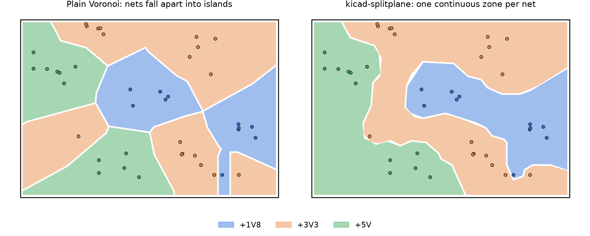

kicad-splitplane
Split a KiCad power layer into one continuous copper zone per voltage, computed from where your vias are.

On a 4-layer board the inner power layer is often shared by several supplies (5V, 3.3V, 1.8V…). Each supply needs its own zone, and each zone has to contain every via of its net, nothing of the other nets, and be one continuous piece of copper. Drawing those outlines by hand is trial and error. This tool does it for you: it first connects each net's vias with a path, then splits the layer like a Voronoi diagram of those paths, so no net breaks into islands.
Command line
Needs Python 3.9+. Works on Linux, macOS and Windows; you don't need KiCad installed.
Installation and usage
git clone https://github.com/atuzlak/kicad-splitplane
cd kicad-splitplane
pip install -r requirements.txt
# which supply nets does the board have?
python kicad_splitplane.py board.kicad_pcb --list-nets
# split In2.Cu between three nets
python kicad_splitplane.py board.kicad_pcb --layer In2.Cu --nets 5V 3.3V VBUSThis writes board_splitplane.kicad_pcb (your board plus the zones) and board_splitplane.png (preview). Your original file is left alone.
Options
| Option | Default | What it does |
|---|---|---|
| --layer | In2.Cu | Copper layer to split |
| --nets | Supply nets sharing that layer | |
| --gap | 0.5 mm | Copper gap between neighbouring zones |
| --edge | 0.5 mm | Clearance to the board edge |
| --min-neck | 1.0 mm | Warn where a zone gets narrower than this |
| --res | 0.5 mm | Routing grid; try 0.3 to 0.6 if a via gets trapped |
| --include-smd | off | Treat SMD pads as vias (preview before fanout) |
| --plain | off | Skip connecting the vias (faster, may create islands) |
| --keep-old | off | Keep existing zones of these nets on the layer |
From Python
import kicad_splitplane as sp
r = sp.process(open("board.kicad_pcb").read(), "In2.Cu", ["5V", "3.3V", "VBUS"])
print(r.log)
sp.render_png(r, "preview.png")Good to know
- If the zones look awkward, move the vias: keep each net's vias together and use short fanout tracks.
- Don't route signals on the neighbouring layer across the gaps between zones. The split plane is their return path.
- Smaller zones get higher priority, so an island inside a bigger zone still fills correctly. Check the order in KiCad's Zone Manager.
- Tested with KiCad 10. Files from KiCad 7 to 9 work too. Arcs in the board outline are approximated.
Feedback and contact
Found a bug, have an idea for an improvement, or interested in working together on this? I'd be glad to hear from you. Write me an email at atuzlak@ethz.ch.
Bug reports and pull requests are also welcome on GitHub.